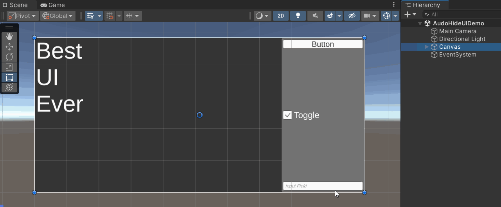
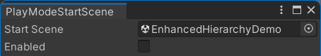

- Released 2024-11-04
Features
- Added Scene View Object Picker for easily picking UI objects in the Scene View by
Ctrl + Clicking to open a context menu. Credit to yasirkula for sharing the original implementation on GitHub.

- Added Play Mode Start Scene for making Unity automatically start in a particular scene when entering Play Mode instead of starting in the scene you currently have open.

Improvements
- Added
[InfoBox]attribute. - Added
Standard Gizmo Componentsfield to the preferences menu for adding custom component types which disable the enhanced Transform Gizmo. - Added restriction to
AutoHideUIso it doesn't activate if theCanvasis rotated such as when usingScreen Space - Cameramode. - Added a zoom multiplier preference to
AutoHideUI. - Compilation Symbols:
- Replaced all
DISABLE_MODULE_???with invertedUNITY_???which are automatically defined by the Assembly Definition when their respective modules are present so users don't need to add them manually. - Added
DISABLE_IG_TRANSFORM_INSPECTORfor disabling the customTransformInspector. - Added
DISABLE_IG_STATE_MACHINE_BEHAVIOUR_EDITORfor disabling the customStateMachineBehaviourInspector. - The Disabling Features page lists them all.
- Replaced all
Fixes
- Fixed inspectable attributes to not show duplicates of members in base classes.
- Fixed
package.jsonto be lower case since it caused problems importing on Linux.